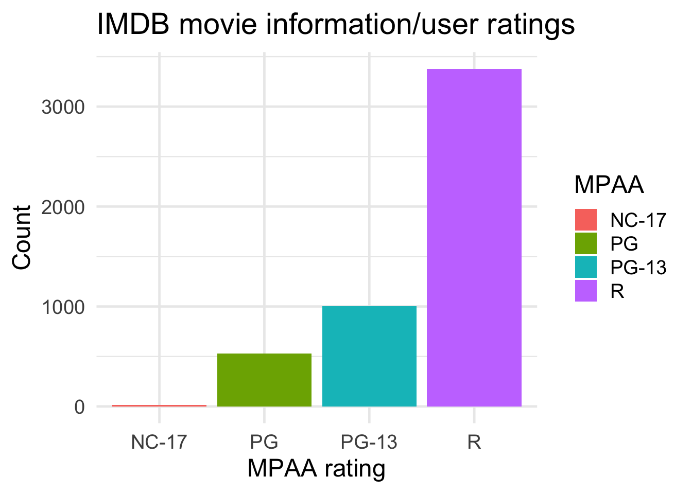
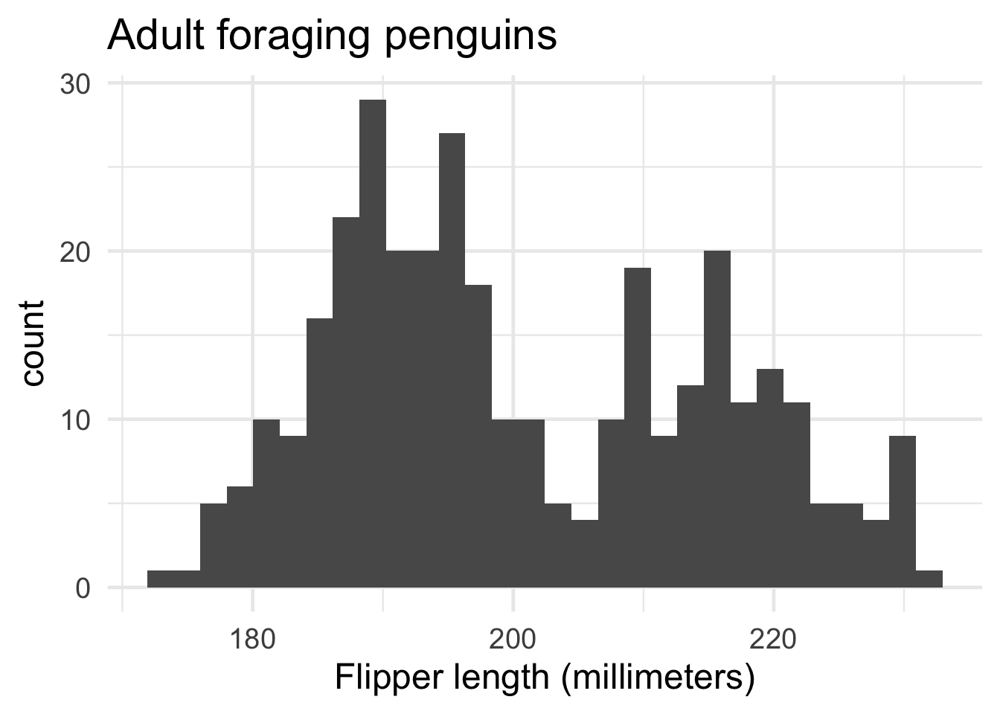
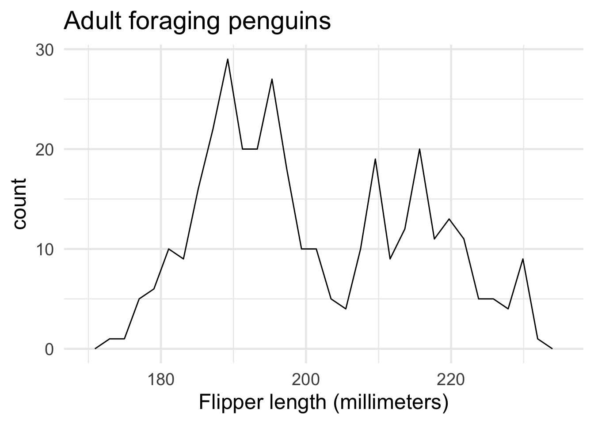
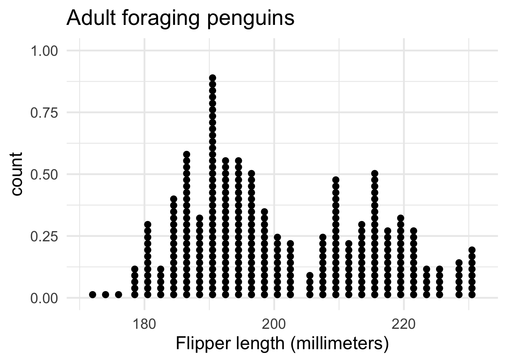
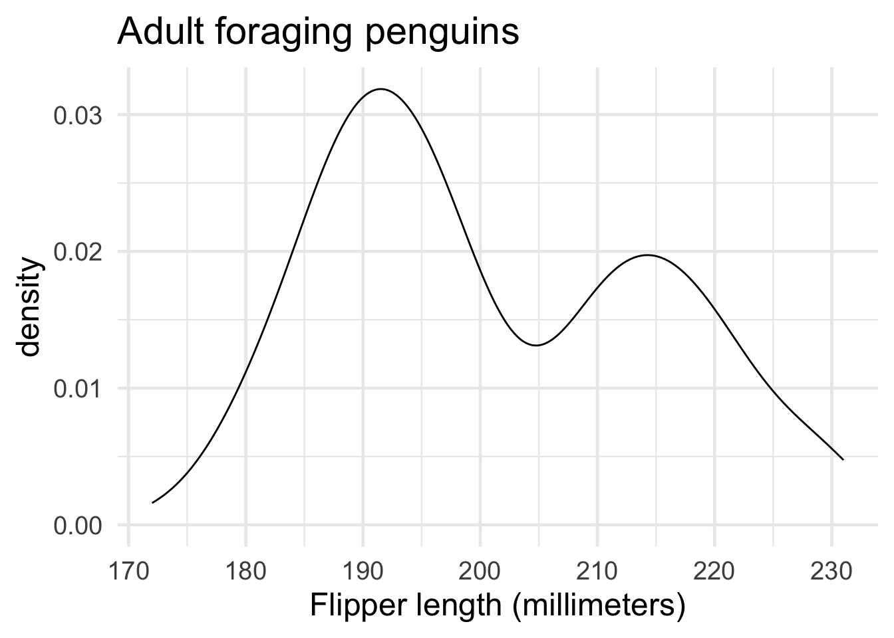
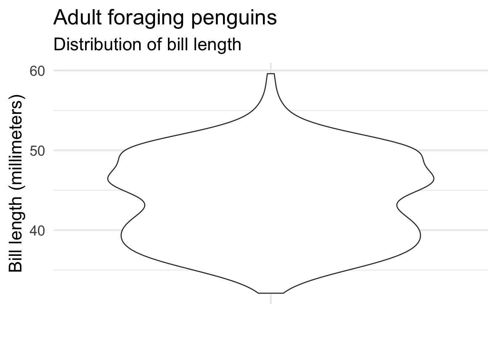
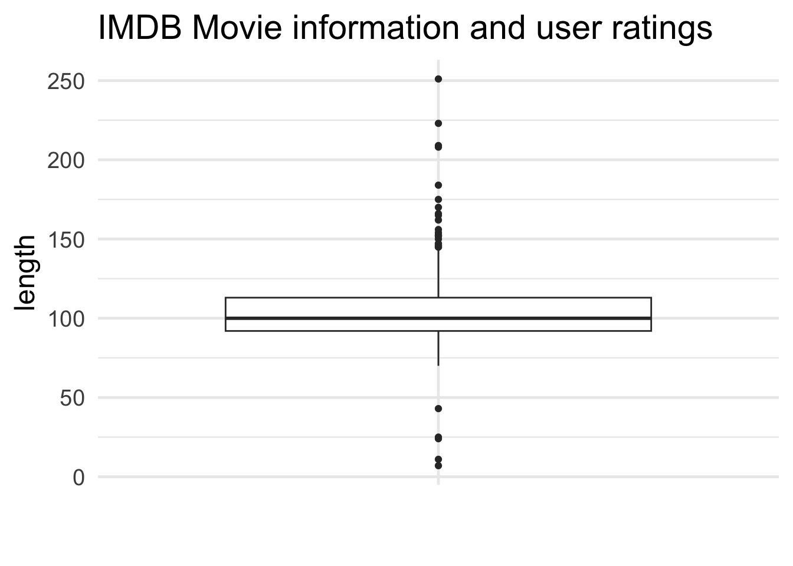

install.packages("ggplot2movies")
library(ggplot2movies)
library(ggplot2)UNIVARIATE
Single variable graphs with ggplot2 (and friends!)
BAR-GRAPHS
Note
When would I use this graph?
The bar-graph (or bar-chart) is used to display counts for the levels of a categorical variable.
Bar charts can be arranged vertically or horizontally, but the length of the bar represents the ‘count’ for each level value.
In ggplot2, bar charts can be built using geom_bar().
PACKAGES:
Install packages.
DATA:
Filter the missing values from mpaa in the ggplot2movies::movies data
movies_bar <- ggplot2movies::movies |>
filter(mpaa != "")
glimpse(movies_bar)Rows: 4,924
Columns: 24
$ title <chr> "$windle", "'A' gai waak", "'A' gai waak juk jaap", "'R Xm…
$ year <int> 2002, 1983, 1987, 2001, 1997, 1999, 2000, 2002, 2004, 2003…
$ length <int> 93, 106, 101, 83, 113, 97, 90, 98, 95, 85, 98, 93, 102, 12…
$ budget <int> NA, NA, NA, NA, 23000000, 16000000, NA, 1100000, NA, NA, 3…
$ rating <dbl> 5.3, 7.1, 7.2, 4.9, 4.8, 6.7, 5.8, 5.6, 4.3, 2.2, 6.4, 5.6…
$ votes <int> 200, 1259, 614, 288, 799, 19095, 3349, 181, 222, 69, 7859,…
$ r1 <dbl> 4.5, 4.5, 4.5, 14.5, 4.5, 4.5, 4.5, 4.5, 14.5, 44.5, 4.5, …
$ r2 <dbl> 0.0, 4.5, 4.5, 4.5, 4.5, 4.5, 4.5, 4.5, 14.5, 4.5, 4.5, 4.…
$ r3 <dbl> 4.5, 4.5, 4.5, 4.5, 4.5, 4.5, 4.5, 4.5, 4.5, 4.5, 4.5, 4.5…
$ r4 <dbl> 4.5, 4.5, 4.5, 4.5, 14.5, 4.5, 4.5, 4.5, 14.5, 4.5, 4.5, 4…
$ r5 <dbl> 24.5, 4.5, 4.5, 14.5, 14.5, 4.5, 14.5, 14.5, 14.5, 4.5, 4.…
$ r6 <dbl> 24.5, 14.5, 14.5, 24.5, 14.5, 14.5, 14.5, 24.5, 14.5, 4.5,…
$ r7 <dbl> 14.5, 14.5, 24.5, 14.5, 14.5, 24.5, 24.5, 14.5, 4.5, 4.5, …
$ r8 <dbl> 4.5, 14.5, 24.5, 4.5, 4.5, 14.5, 14.5, 14.5, 4.5, 4.5, 14.…
$ r9 <dbl> 4.5, 14.5, 14.5, 4.5, 4.5, 14.5, 4.5, 4.5, 4.5, 0.0, 4.5, …
$ r10 <dbl> 14.5, 24.5, 14.5, 4.5, 14.5, 14.5, 4.5, 14.5, 14.5, 14.5, …
$ mpaa <chr> "R", "PG-13", "PG-13", "R", "PG-13", "PG-13", "R", "R", "R…
$ Action <int> 1, 1, 1, 0, 0, 0, 0, 0, 0, 1, 0, 0, 1, 0, 0, 0, 0, 0, 0, 1…
$ Animation <int> 0, 0, 0, 0, 0, 0, 0, 0, 0, 0, 0, 0, 0, 0, 0, 0, 0, 0, 0, 0…
$ Comedy <int> 0, 1, 1, 0, 1, 1, 1, 1, 0, 0, 1, 1, 0, 0, 0, 0, 1, 0, 0, 0…
$ Drama <int> 1, 0, 0, 1, 0, 0, 0, 0, 0, 0, 1, 0, 0, 1, 1, 1, 0, 1, 1, 0…
$ Documentary <int> 0, 0, 0, 0, 0, 0, 0, 0, 0, 0, 0, 0, 0, 0, 0, 0, 0, 0, 0, 0…
$ Romance <int> 0, 0, 0, 0, 1, 1, 1, 0, 0, 0, 1, 0, 0, 0, 0, 0, 0, 0, 0, 0…
$ Short <int> 0, 0, 0, 0, 0, 0, 0, 0, 0, 0, 0, 0, 0, 0, 0, 0, 0, 0, 0, 0…CODE:
Create the labels
Map mpaa to the x axis
Map mpaa to the fill aesthetic inside the aes() of geom_bar()
labs_bar <- labs(
title = "IMDB movie information/user ratings",
x = "MPAA rating", y = "Count",
fill = "MPAA")
ggp2_bar <- ggplot(data = movies_bar,
aes(x = mpaa)) +
geom_bar(aes(fill = mpaa))
ggp2_bar +
labs_barGRAPH:

HISTOGRAMS
Note
When would I use this graph?
Histograms use bars, but the x axis is divided into ‘bins’ that cover the range of the variable.
The standard number of bins is 30
PACKAGES:
Install packages.
install.packages("palmerpenguins")
library(palmerpenguins)
library(ggplot2)DATA:
The penguins data.
penguins <- palmerpenguins::penguins
glimpse(penguins)Rows: 344
Columns: 8
$ species <fct> Adelie, Adelie, Adelie, Adelie, Adelie, Adelie, Adel…
$ island <fct> Torgersen, Torgersen, Torgersen, Torgersen, Torgerse…
$ bill_length_mm <dbl> 39.1, 39.5, 40.3, NA, 36.7, 39.3, 38.9, 39.2, 34.1, …
$ bill_depth_mm <dbl> 18.7, 17.4, 18.0, NA, 19.3, 20.6, 17.8, 19.6, 18.1, …
$ flipper_length_mm <int> 181, 186, 195, NA, 193, 190, 181, 195, 193, 190, 186…
$ body_mass_g <int> 3750, 3800, 3250, NA, 3450, 3650, 3625, 4675, 3475, …
$ sex <fct> male, female, female, NA, female, male, female, male…
$ year <int> 2007, 2007, 2007, 2007, 2007, 2007, 2007, 2007, 2007…CODE:
Create the labels
labs_histogram <- labs(
title = "Adult foraging penguins",
x = "Flipper length (millimeters)")
ggp2_hist <- ggplot(data = penguins,
aes(x = flipper_length_mm)) +
geom_histogram()
ggp2_hist +
labs_histogramGRAPH:

FREQUENCY POLYGONS
Note
When would I use this graph?
Frequency polygons (geom_freqpoly()) are similar to histograms,
but they use lines instead of bars to represent the variable distribution.
PACKAGES:
Install packages.
install.packages("palmerpenguins")
library(palmerpenguins)
library(ggplot2)DATA:
The penguins data
penguins <- palmerpenguins::penguins
glimpse(penguins)Rows: 344
Columns: 8
$ species <fct> Adelie, Adelie, Adelie, Adelie, Adelie, Adelie, Adel…
$ island <fct> Torgersen, Torgersen, Torgersen, Torgersen, Torgerse…
$ bill_length_mm <dbl> 39.1, 39.5, 40.3, NA, 36.7, 39.3, 38.9, 39.2, 34.1, …
$ bill_depth_mm <dbl> 18.7, 17.4, 18.0, NA, 19.3, 20.6, 17.8, 19.6, 18.1, …
$ flipper_length_mm <int> 181, 186, 195, NA, 193, 190, 181, 195, 193, 190, 186…
$ body_mass_g <int> 3750, 3800, 3250, NA, 3450, 3650, 3625, 4675, 3475, …
$ sex <fct> male, female, female, NA, female, male, female, male…
$ year <int> 2007, 2007, 2007, 2007, 2007, 2007, 2007, 2007, 2007…CODE:
Create the labels
Map flipper_length_mm to the x axis
Add the geom_freqpoly() layer
labs_freqpoly <- labs(
title = "Adult foraging penguins",
x = "Flipper length (millimeters)")
ggp2_freqpoly <- ggplot(data = penguins,
aes(x = flipper_length_mm)) +
geom_freqpoly()
ggp2_freqpoly +
labs_freqpolyGRAPH: Experiment to see how many bins fit your variable’s distribution

DOT-PLOTS
Note
When would I use this graph?
Dot-plots (geom_dotplot()) are similar to histograms and frequency polygons,
except instead of using bars or lines, they use dots to represent the values of a given variable.
PACKAGES:
Install packages.
install.packages("palmerpenguins")
library(palmerpenguins)
library(ggplot2)DATA:
Description of data
penguins <- palmerpenguins::penguins
glimpse(penguins)Rows: 344
Columns: 8
$ species <fct> Adelie, Adelie, Adelie, Adelie, Adelie, Adelie, Adel…
$ island <fct> Torgersen, Torgersen, Torgersen, Torgersen, Torgerse…
$ bill_length_mm <dbl> 39.1, 39.5, 40.3, NA, 36.7, 39.3, 38.9, 39.2, 34.1, …
$ bill_depth_mm <dbl> 18.7, 17.4, 18.0, NA, 19.3, 20.6, 17.8, 19.6, 18.1, …
$ flipper_length_mm <int> 181, 186, 195, NA, 193, 190, 181, 195, 193, 190, 186…
$ body_mass_g <int> 3750, 3800, 3250, NA, 3450, 3650, 3625, 4675, 3475, …
$ sex <fct> male, female, female, NA, female, male, female, male…
$ year <int> 2007, 2007, 2007, 2007, 2007, 2007, 2007, 2007, 2007…CODE:
Create the labels
Map flipper_length_mm to the x axis
Add the geom_dotplot() layer
Adjust the dotsize
labs_dotplot <- labs(
title = "Adult foraging penguins",
x = "Flipper length (millimeters)")
ggp2_dotplot <- ggplot(data = penguins,
aes(x = flipper_length_mm)) +
geom_dotplot(dotsize = 0.5)
ggp2_dotplot +
labs_dotplotGRAPH:

DENSITY PLOTS
Note
When would I use this graph?
Density plots are similar to frequency polygons and histograms, except the line has been ‘smoothed.’
Instead of dividing the x axis into discrete quantitative ‘bins’ to create groups for the variable values, density plots transform the distribution according to a ‘bandwidth’ parameter.
PACKAGES:
Install packages.
install.packages("palmerpenguins")
library(palmerpenguins)
library(ggplot2)DATA:
The penguins data.
penguins <- palmerpenguins::penguins
glimpse(penguins)Rows: 344
Columns: 8
$ species <fct> Adelie, Adelie, Adelie, Adelie, Adelie, Adelie, Adel…
$ island <fct> Torgersen, Torgersen, Torgersen, Torgersen, Torgerse…
$ bill_length_mm <dbl> 39.1, 39.5, 40.3, NA, 36.7, 39.3, 38.9, 39.2, 34.1, …
$ bill_depth_mm <dbl> 18.7, 17.4, 18.0, NA, 19.3, 20.6, 17.8, 19.6, 18.1, …
$ flipper_length_mm <int> 181, 186, 195, NA, 193, 190, 181, 195, 193, 190, 186…
$ body_mass_g <int> 3750, 3800, 3250, NA, 3450, 3650, 3625, 4675, 3475, …
$ sex <fct> male, female, female, NA, female, male, female, male…
$ year <int> 2007, 2007, 2007, 2007, 2007, 2007, 2007, 2007, 2007…CODE:
Create the labels
Map flipper_length_mm to the x axis
Add the geom_density() layer
labs_density <- labs(
title = "Adult foraging penguins",
x = "Flipper length (millimeters)")
ggp2_density <- ggplot(data = penguins,
aes(x = flipper_length_mm)) +
geom_density()
ggp2_density +
labs_densityGRAPH:

VIOLIN PLOTS
Note
When would I use this graph?
A ‘violin plot’ is a variation of a density plot, where the distribution is plotted symmetrically creating a two-sided area.
PACKAGES:
Install packages.
install.packages("palmerpenguins")
library(palmerpenguins)
library(ggplot2)DATA:
The penguins data.
penguins <- palmerpenguins::penguins
glimpse(penguins)Rows: 344
Columns: 8
$ species <fct> Adelie, Adelie, Adelie, Adelie, Adelie, Adelie, Adel…
$ island <fct> Torgersen, Torgersen, Torgersen, Torgersen, Torgerse…
$ bill_length_mm <dbl> 39.1, 39.5, 40.3, NA, 36.7, 39.3, 38.9, 39.2, 34.1, …
$ bill_depth_mm <dbl> 18.7, 17.4, 18.0, NA, 19.3, 20.6, 17.8, 19.6, 18.1, …
$ flipper_length_mm <int> 181, 186, 195, NA, 193, 190, 181, 195, 193, 190, 186…
$ body_mass_g <int> 3750, 3800, 3250, NA, 3450, 3650, 3625, 4675, 3475, …
$ sex <fct> male, female, female, NA, female, male, female, male…
$ year <int> 2007, 2007, 2007, 2007, 2007, 2007, 2007, 2007, 2007…CODE:
Create the labels
- Place an empty string (
"") in thexargument
Map and empty string ("") to the x and bill_length_mm to the y
Add geom_violin()
labs_violin <- labs(
title = "Adult foraging penguins",
subtitle = "Distribution of bill length",
x = "",
y = "Bill length (millimeters)")
ggp2_violin <- ggplot(data = penguins,
aes(x = '',
y = bill_length_mm)) +
geom_violin()
ggp2_violin +
labs_violinGRAPH:

BOX-PLOTS
Note
When would I use this graph?
Box-plots (sometimes called box-and-whisker plots) use position, lines (vertical and horizontal), and points to convey a collection of summary statistics in a single graph.
In ggplot2, we can create a box-plot for a single numeric variable using geom_boxplot()
PACKAGES:
Install packages.
install.packages("ggplot2movies")
library(ggplot2movies)
library(ggplot2)DATA:
Filter ggplot2movies::movies to only include films after the made after 2000, and remove missing values from mpaa and budget.
movies_box <- ggplot2movies::movies |>
dplyr::filter(year > 2000 &
mpaa != "" &
!is.na(budget))
glimpse(movies_box)Rows: 838
Columns: 24
$ title <chr> "100 Mile Rule", "13 Going On 30", "15 Minutes", "2 Fast 2…
$ year <int> 2002, 2004, 2001, 2003, 2004, 2003, 2002, 2002, 2001, 2002…
$ length <int> 98, 98, 120, 107, 129, 124, 135, 113, 125, 96, 99, 92, 110…
$ budget <int> 1100000, 37000000, 42000000, 76000000, 12000000, 20000000,…
$ rating <dbl> 5.6, 6.4, 6.1, 5.1, 7.6, 8.0, 7.8, 7.3, 5.4, 5.4, 6.8, 6.1…
$ votes <int> 181, 7859, 10866, 9556, 2663, 21857, 15788, 24174, 7298, 8…
$ r1 <dbl> 4.5, 4.5, 4.5, 14.5, 4.5, 4.5, 4.5, 4.5, 4.5, 4.5, 4.5, 4.…
$ r2 <dbl> 4.5, 4.5, 4.5, 4.5, 4.5, 4.5, 4.5, 4.5, 4.5, 4.5, 4.5, 4.5…
$ r3 <dbl> 4.5, 4.5, 4.5, 4.5, 4.5, 4.5, 4.5, 4.5, 4.5, 4.5, 4.5, 4.5…
$ r4 <dbl> 4.5, 4.5, 4.5, 4.5, 4.5, 4.5, 4.5, 4.5, 4.5, 4.5, 4.5, 4.5…
$ r5 <dbl> 14.5, 4.5, 14.5, 14.5, 4.5, 4.5, 4.5, 4.5, 14.5, 14.5, 4.5…
$ r6 <dbl> 24.5, 14.5, 24.5, 14.5, 4.5, 4.5, 4.5, 14.5, 14.5, 24.5, 1…
$ r7 <dbl> 14.5, 24.5, 24.5, 14.5, 14.5, 14.5, 14.5, 24.5, 14.5, 24.5…
$ r8 <dbl> 14.5, 14.5, 14.5, 4.5, 24.5, 24.5, 34.5, 24.5, 14.5, 4.5, …
$ r9 <dbl> 4.5, 4.5, 4.5, 4.5, 14.5, 24.5, 24.5, 14.5, 4.5, 4.5, 4.5,…
$ r10 <dbl> 14.5, 14.5, 4.5, 4.5, 24.5, 14.5, 14.5, 14.5, 4.5, 4.5, 14…
$ mpaa <chr> "R", "PG-13", "R", "PG-13", "R", "R", "R", "R", "R", "R", …
$ Action <int> 0, 0, 0, 1, 0, 0, 0, 0, 1, 0, 0, 1, 0, 1, 0, 0, 0, 1, 0, 1…
$ Animation <int> 0, 0, 0, 0, 0, 0, 0, 0, 0, 0, 0, 0, 0, 0, 0, 0, 0, 0, 0, 0…
$ Comedy <int> 1, 1, 0, 0, 0, 0, 0, 0, 1, 1, 1, 1, 0, 0, 0, 1, 1, 0, 1, 1…
$ Drama <int> 0, 1, 1, 0, 1, 1, 1, 0, 0, 1, 0, 0, 1, 0, 1, 1, 1, 0, 1, 0…
$ Documentary <int> 0, 0, 0, 0, 0, 0, 0, 0, 0, 0, 0, 0, 0, 0, 0, 0, 0, 0, 0, 0…
$ Romance <int> 0, 1, 0, 0, 1, 0, 0, 0, 0, 1, 1, 0, 0, 0, 0, 0, 0, 0, 0, 0…
$ Short <int> 0, 0, 0, 0, 0, 0, 0, 0, 0, 0, 0, 0, 0, 0, 0, 0, 0, 0, 0, 0…CODE:
Create the labels
- Assign a blank character string (
"") to thexaxis inlabs()
Map length to the y axis and an empty string ("") to the x axis
Add the geom_boxplot() layer
labs_boxplot <- labs(
title = "IMDB Movie information and user ratings",
y = "Length", x = "")
ggp2_boxplot <- ggplot(data = movies_box,
aes(x = " ",
y = length)) +
geom_boxplot()
ggp2_boxplot +
labs_boxplotGRAPH:

MORE ON BOX-PLOTS
The table below shows the 25th percentile, the median, the 75th percentile, the IQR, and a histogram of the length column from the movies_box dataset.
| 25th | Median | 75th | IQR | Histogram |
|---|---|---|---|---|
| 92 | 100 | 113 | 21 | ▁▇▅▁▁ |
In the figure below we can see how the box-plot represents each of these numbers using lines and points.

In ggplot2, values that fall more than 1.5 times the IQR are displayed as individual points (aka outliers). The lines extending from the bottom and top of the main box represent the last non-outlier value in the distribution.
Compare the four graphs of length from movie_box below to the box-plot: